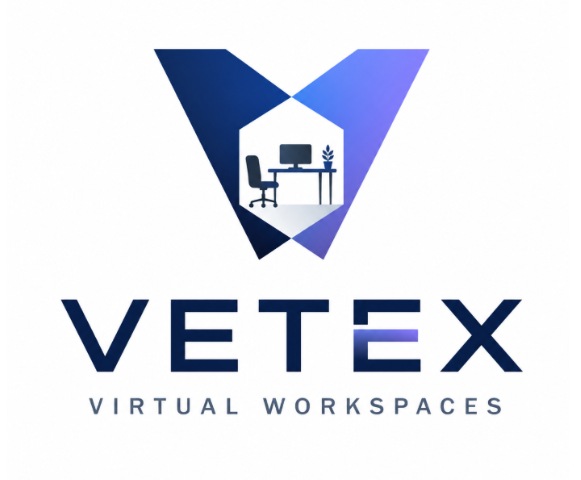

Cloud Solutions • Virtual Infrastructure • Modern Workspaces
Vetex Virtual Workspaces provides secure, scalable, and cloud-based desktop solutions that help businesses collaborate from anywhere. Our mission is to simplify virtual infrastructure while delivering enterprise-grade performance and reliability.
Explore Our ServicesSecure cloud-hosted desktops that allow employees to work from any device while maintaining enterprise security.
Move existing infrastructure into the cloud with minimal downtime and improved scalability.
Continuous monitoring, maintenance, security updates, backups, and technical support for your organization.
Founded with the vision of making enterprise cloud technology accessible to organizations of every size, Vetex Virtual Workspaces delivers secure virtual environments that improve productivity, reduce operational costs, and enable flexible work. Whether supporting small businesses or large enterprises, Vetex provides dependable infrastructure built for today's digital workplace.